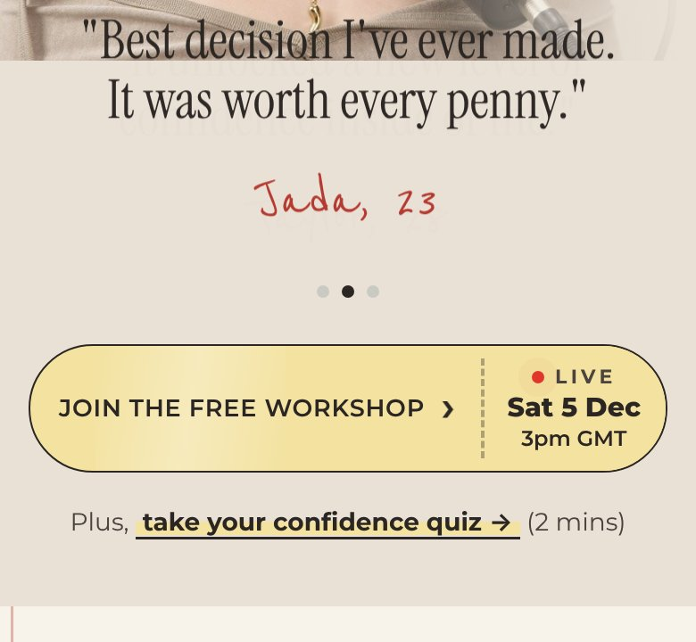
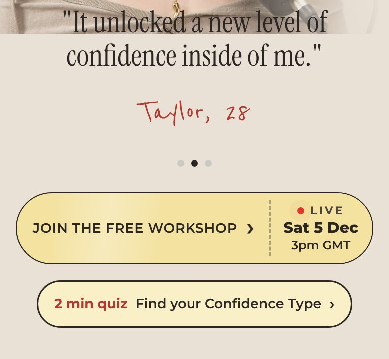
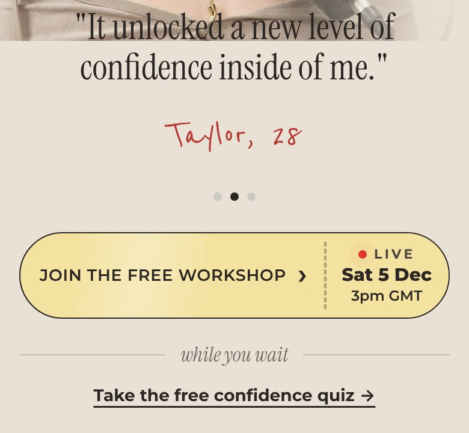
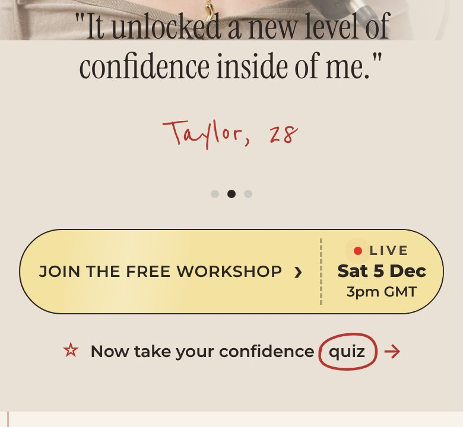

Quiz link options ☆
Six ways to add a quiet, clickable quiz link under "Join the free workshop" at the top of the Rebirth site. Each one is worded so she does both, the workshop and the quiz. Shown as they look on a phone.

1Text link with arrow
"Before you join, take the confidence quiz". Underlined with an arrow, so it reads as a link. The most subtle option.

2Handwritten pen note
Red pen and a hand-drawn arrow: "and find your Confidence Type". Matches the journal feel best.

3Butter highlighter
"Plus, take your confidence quiz" with a highlighter swipe and underline. Ties into the brand highlighter.

4Small button
A small butter button. The most obviously tappable on a phone, but slightly less subtle.

5"while you wait" divider
A divider that says "while you wait", so it reads as something to do before the workshop, not instead of it.

6Star and circled word
"Now take your confidence quiz", with the brand star, "quiz" circled in red pen and an arrow.